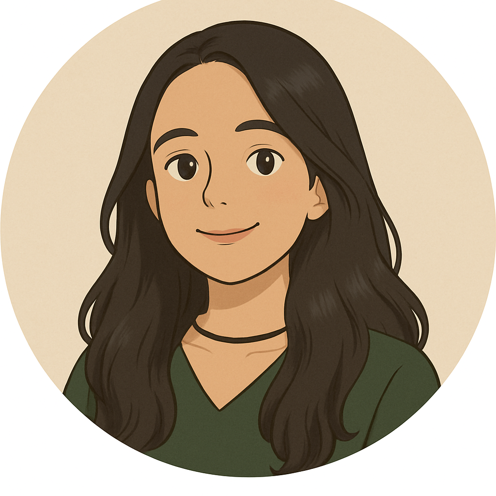

<!-- <!DOCTYPE html>
<html>
    <head>
        <meta charset="UTF-8">
        <meta name="viewpoint" content="width-width=device-width, initial-scale=1.0/">
        <title> Portfólio Sophia Ribeiro Mendonça | Dev </title>
        <link rel="stylesheet" href="style.css">
        <link rel="preconnect" href="https://fonts.googleapis.com">
        <link rel="preconnect" href="https://fonts.gstatic.com" crossorigin>
        <link href="https://fonts.googleapis.com/css2?family=Raleway:ital,wght@0,100..900;1,100..900&display=swap" rel="stylesheet">
        <link rel="preconnect" href="https://fonts.googleapis.com">
        <link rel="preconnect" href="https://fonts.gstatic.com" crossorigin>
        <link href="https://fonts.googleapis.com/css2?family=Fira+Sans:ital,wght@0,100;0,200;0,300;0,400;0,500;0,600;0,700;0,800;0,900;1,100;1,200;1,300;1,400;1,500;1,600;1,700;1,800;1,900&display=swap" rel="stylesheet">

    </head>
    <body>
        <header class="cabecalho">
            <div class="container-logo">
            <h1 >SophiaaRibeiro.GitHub </h1>
            
             </div>
               
         <nav class="menu-cabecalho" id="menuCabecalho">
                <a href="index.html">Home</a>            
                <a href="projetos.html">Projetos</a>
                <a href="curriculo.html">Currículo</a>
                <a href="conhecimentos.html">Conhecimentos</a>
                <a href="certificados.html">Certificados</a>
                <a href="Sobremim.html" class="active"> Sobre Mim</a>
                <a href="contato.html">Contato</a>     
        </nav>
        </header>
            <section class="container-texto">                
            <section class="secao-faq">
                        <div class="bloco-pergunta">
                            <button class="btn-pergunta-sobremim">Quem sou eu?</button>
                                <div class="resposta-pergunta">
                                <p>Sou estudante de Sistemas para Internet e tenho experiência prática em desenvolvimento web com HTML, CSS, C#, JavaScript e SQL em ambiente profissional. No dia a dia, atuo na criação e manutenção de views em MVC, manipulação de dados e melhorias de interfaces. Além disso, estou me aprofundando em metodologias ágeis e gestão de projetos, buscando unir conhecimento técnico e organizacional para entregar soluções mais completas.</p>
                                </div>
                        </div>    

                        <div class="bloco-pergunta">
                            <button class="btn-pergunta-sobremim">Em qual instituição de ensino você estuda?</button>
                                <div class="resposta-pergunta">
                                    <p>Estudo na Fatec Rubens Lara, e já estudei  em uma plataforma de estudos online onde aprofundei meus conhecimentos em HTML, CSS, C#, SQL e mais. Também estou desenvolvendo este portfólio com projetos práticos e desafios pessoais.</p>
                                </div>
                        </div>                    
                      
                        <div class="bloco-pergunta">
                                <button class="btn-pergunta-sobremim" >Tinha experiência no mercado de trabalho?</button>
                                    <div class="resposta-pergunta">
                                        <p>Sim! Trabalhei como auxiliar administrativa, e essa experiência me ajudou a ser mais organizada e focada. Mas sempre tive vontade de seguir algo mais desafiador e que me desenvolvesse como profissional.</p>
                                    </div>   
                        </div>                   

                        <div class="bloco-pergunta">
                            <button class="btn-pergunta-sobremim">Qual meu objetivo?</button>
                                <div class="resposta-pergunta">
                                    <p>Atualmente estou estudando Gestão de Projetos e, ao mesmo tempo, me desenvolvendo para atuar como programadora full stack. Meu objetivo é unir conhecimento em tecnologia e gestão para criar soluções completas, e estou correndo atrás desse sonho todos os dias</p>
                                </div>
                        </div>

                        <div class="bloco-pergunta">
                            <button class="btn-pergunta-sobremim">No que está trabalhando no momento?</button>                  
                            <div class="resposta-pergunta">
                                <p>Atualmente, estou trabalhando em um site de cafeteria usando Bootstrap.</p>
                            </div>
                        </div>                                    
            </section>              
            </section>
             <button id="btnTopo">↑</button>
        <script src="/portfolio-2025/js/script.js"></script>
    </body>
</html>      -->